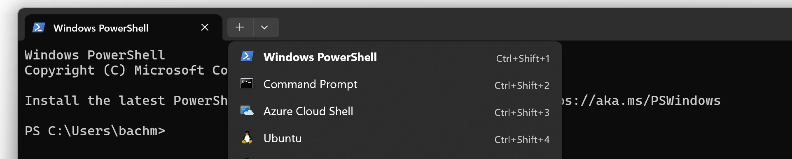
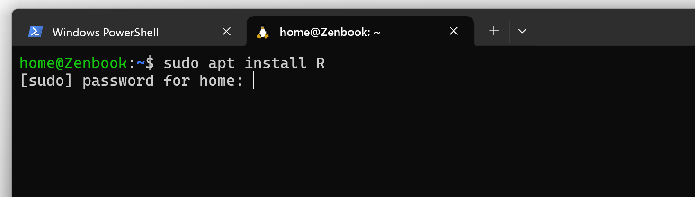
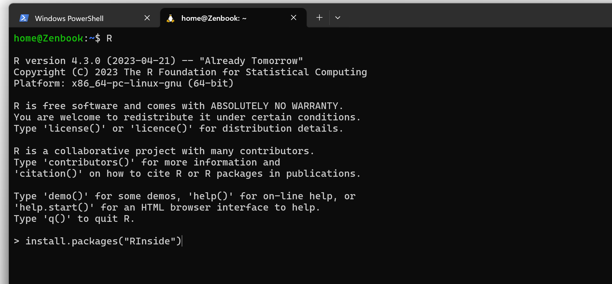
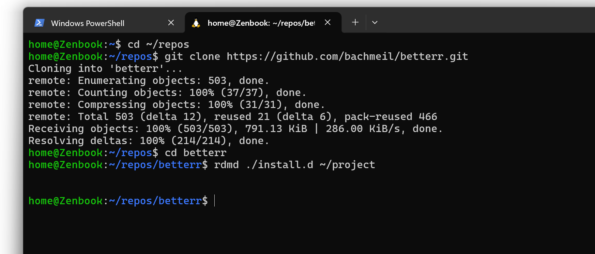

Although it should be straightforward to get BetterR working on Windows with a “native” workflow, where you install a Windows version of the D compiler and do your compilation using traditional Windows development tools, the reality is that I don’t have the time to figure out how to get all of that working or to support users that primarily use scripting languages. As a Linux user, even if I had lots of excess time, I would not have the expertise needed to provide users with technical support as they set up a native Windows workflow. I will be happy to work with anyone wanting to do that job. If you’re experienced with D development on Windows, it probably won’t be difficult.
You should not take the above statement to mean I never do D programming on Windows. I actually do quite a bit of development on a Windows laptop, but not using a traditional Windows workflow. Instead, I use the combination of Windows Subsystem for Linux (WSL) and VS Code. I’d honestly recommend this approach for anyone that’s using languages like R and Python on Windows. The learning curve to get going with the traditional Windows development workflow is steep, and if you’re interested in BetterR, you’ll probably find the WSL-based workflow much easier.
WSL is a Windows feature that allows you to run a Linux distribution inside of Windows. It’s an official part of Windows, maintained and supported by Microsoft, though you’ve probably never heard of it if you’re not a software developer. You can learn more about it in this article.
You can find details about installing WSL in this Microsoft tutorial. I strongly encourage you to go with the default Linux distribution, which is currently Ubuntu 22.04.
You can download and install VS Code at the official download site.
The next step is to connect to WSL from VS Code.
Windows Terminal Preview is an excellent terminal with built-in support for WSL. You can install it through the Microsoft Store. If you don’t like the Microsoft Store, you have other options.
In Windows Terminal Preview, open your Ubuntu 22.04 WSL.

Now install R and RInside:
sudo apt install R
Open R and install RInside:
R
> install.packages("RInside")
The easiest way to install BetterR for now is to clone the repository. You might need to install git first.
sudo apt install git
mkdir ~/repos
cd ~/repos
git clone https://github.com/bachmeil/betterr.gitYou can use the installation utility to install it to the working directory of your choice:
mkdir ~/project
rdmd ./install.d ~/project
Now you can return to VS Code, connect to the WSL session, and open the project directory in ~/project.